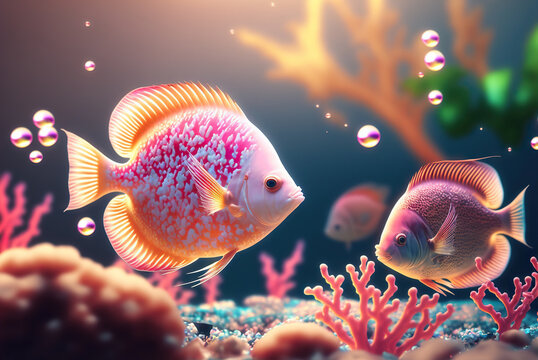
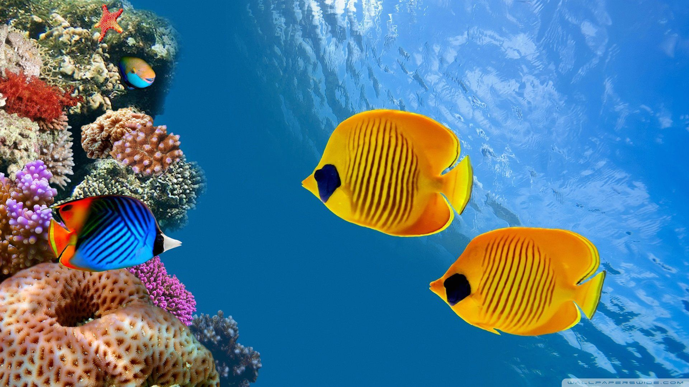

<!DOCTYPE html>

<html>
<head>
<style>
#grad1 {
  height: 200px;
  background-color: rgb(119, 118, 118); /* For browsers that do not support gradients */
  background-image: linear-gradient(#ef9b4dc1, #ffffffc1);
}
</style>
</head>
<body>


<div id="grad1"></div>

</body>
</html>


<body style="background-color:#ef9b4dc1;"></body>
<html lang="en">

<head>
    <meta charset="UTF-8">
    <meta name="viewport" content="width=device-width, initial-scale=1.0">
    <title>PETOPIA</title>
    <a href="index.html">
      
      </a>
  
<meta name="viewport" content="width=device-width, initial-scale=1">
<style>
body {
  margin: 0;
  font-family: Arial, Helvetica, sans-serif;
}

.topnav {
  margin-top: -190px;
  margin-left: 260px;
  overflow: hidden;
  background-color: #E8DCB5;
}

.topnav a {
   float: left;
  color: #ea8729c1;
  text-align: center;
  padding: 14px 16px;
  text-decoration: none;
  font-size: 20px;
}

.topnav a:hover {
  background-color: #ddd;
  color: black;
}

.topnav a.active {
  background-color: #ea8729c1;
  color: white;
}
</style>
</head>
<body>

<div class="topnav" width"500px">
  <a class="active" href="index.html">Home</a>
  <a href="petfish.html">Fish</a>
  <a href="#contact">Dogs</a>
  <a href="#about">Rabbits</a>
  <a href="#about">Cats</a>
  <a href="#about">Birds</a>
</div>

<div style="padding-left:16px">
  <h2>Top Navigation Example</h2>
  <p>Some content..</p>
</div>

</body>

<body>
    <header>
      <style>.p1 {
        font-family: "Times New Roman", Times, serif; 
        font-size: 40px;
      }
      h1 {font-family: "Times New Roman", Times, serif;
    font-size: 100px;}
      </style>
      
        <h1 style ="color:white" class ="h1">Are fish the perfect pet for you? </h1>
        
    </header>
<meta name="viewport" content="width=device-width, initial-scale=1">
<style>
* {box-sizing: border-box}
body {font-family: Verdana, sans-serif; margin:0}
.mySlides {display: none}
img {vertical-align: middle;}

/* Slideshow container */
.slideshow-container {
  max-width: 1000px;
  position: relative;
  margin: auto;
}

/* Next & previous buttons */
.prev, .next {
  cursor: pointer;
  position: absolute;
  top: 50%;
  width: auto;
  padding: 16px;
  margin-top: -22px;
  color: white;
  font-weight: bold;
  font-size: 18px;
  transition: 0.6s ease;
  border-radius: 0 3px 3px 0;
  user-select: none;
}

/* Position the "next button" to the right */
.next {
  right: 0;
  border-radius: 3px 0 0 3px;
}

/* On hover, add a black background color with a little bit see-through */
.prev:hover, .next:hover {
  background-color: rgba(0,0,0,0.8);
}

/* Caption text */
.text {
  color: #f2f2f2;
  font-size: 15px;
  padding: 8px 12px;
  position: absolute;
  bottom: 8px;
  width: 100%;
  text-align: center;
}

/* Number text (1/3 etc) */
.numbertext {
  color: #f2f2f2;
  font-size: 12px;
  padding: 8px 12px;
  position: absolute;
  top: 0;
}

/* The dots/bullets/indicators */
.dot {
  cursor: pointer;
  height: 15px;
  width: 15px;
  margin: 0 2px;
  background-color: #bbb;
  border-radius: 50%;
  display: inline-block;
  transition: background-color 0.6s ease;
}

.active, .dot:hover {
  background-color: #717171;
}

/* Fading animation */
.fade {
  animation-name: fade;
  animation-duration: 1.5s;
}

@keyframes fade {
  from {opacity: .4} 
  to {opacity: 1}
}

/* On smaller screens, decrease text size */
@media only screen and (max-width: 300px) {
  .prev, .next,.text {font-size: 11px}
}
</style>
</head>
<body>

<div class="slideshow-container">

<div class="mySlides fade">
  <div class="numbertext">1 / 3</div>
  
  <div class="text"></div>
</div>

<div class="mySlides fade">
  <div class="numbertext">2 / 3</div>
  
  <div class="text"></div>
</div>

<div class="mySlides fade">
  <div class="numbertext">3 / 3</div>
  
  <div class="text"></div>
</div>

<a class="prev" onclick="plusSlides(-1)">❮</a>
<a class="next" onclick="plusSlides(1)">❯</a>

</div>
<br>

<div style="text-align:center">
  <span class="dot" onclick="currentSlide(1)"></span> 
  <span class="dot" onclick="currentSlide(2)"></span> 
  <span class="dot" onclick="currentSlide(3)"></span> 
</div>

<script>
let slideIndex = 1;
showSlides(slideIndex);

function plusSlides(n) {
  showSlides(slideIndex += n);
}

function currentSlide(n) {
  showSlides(slideIndex = n);
}

function showSlides(n) {
  let i;
  let slides = document.getElementsByClassName("mySlides");
  let dots = document.getElementsByClassName("dot");
  if (n > slides.length) {slideIndex = 1}    
  if (n < 1) {slideIndex = slides.length}
  for (i = 0; i < slides.length; i++) {
    slides[i].style.display = "none";  
  }
  for (i = 0; i < dots.length; i++) {
    dots[i].className = dots[i].className.replace(" active", "");
  }
  slides[slideIndex-1].style.display = "block";  
  dots[slideIndex-1].className += " active";
}
</script>

</body>

<p class="p1">Hey there, fish fanatics! Are you thinking of getting a fin-tastic friend to brighten up your life? Look no further! Fish are a great pet for anyone, whether you're a seasoned aquarist or a newbie to the fish-keeping world. Not only are they low maintenance, but they're also super calming to watch and can add a splash of color to your home. Plus, with so many species to choose from, you're sure to find a fish that's just fin-tastic for you! So why not dive in and give fish-keeping a try? Your new underwater buddy will thank you!</p>

<body>


    <h1>How do i purchase a pet fish?</h1>

    <p1> Buying a pet fish can be a fun and exciting experience! First, research different types of fish to find one that's right for you. Consider factors like size, color, and personality. Next, choose a fish tank that's appropriate for the size and type of fish you want. Make sure it's clean and well-maintained. When you're ready to buy, visit a reputable pet store or aquarium. Look for fish that are active and healthy, with bright colors and no visible injuries. Ask the store staff for advice and recommendations. They can help you choose the perfect fish for your needs and experience level. Finally, take your new fish home and provide it with a comfortable and safe environment. Follow the instructions for setting up and maintaining your fish tank, and enjoy watching your new pet thrive!</p1>
</body>
<html>
<body>

<h2>Sure, here are some fun and helpful websites for fish owners:</h2>

<ul>
  <li>The Spruce: This website has a ton of information on fish care, including articles on different species, tank setup, and health issues.</li>
  <li>PetMD: This website has a variety of resources for fish owners, including articles on fish health and behavior, as well as a directory of veterinarians who specialize in aquatic care..</li>
  <li>Aquatic Community: This website is dedicated to all things aquatic, with a forum where you can ask questions and connect with other fish enthusiasts..</li>
</ul>  


    <nav>
        <ul>
          
       
          
        </ul>
    </nav>

    <section>
        <h2>Other pets we have:</h2>

        <li><a href="c:\Users\admin\Downloads\petopia fish">Fish</a></li>
        <li><a href="#">Dogs</a></li>
        <li><a href="#">Cats</a></li>
        <li><a href="#">Rabbits</a></li>

        <div class=""></div>
        <li><a href="index.html">Home</a></li>
        <p>


        </p>
    </section>

    <footer>
        <p>&copy; 2023 PETOPIA INC ALL RIGHTS RESERVED</p>
    </footer>
</body>


</html>
